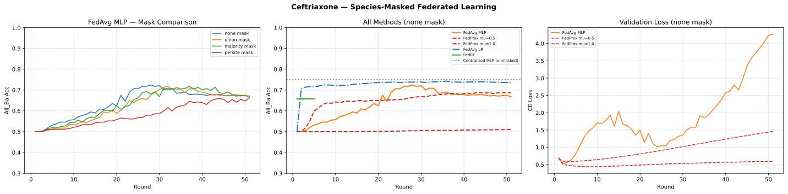
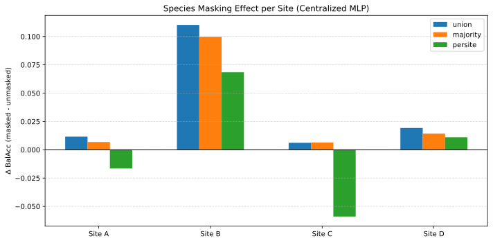
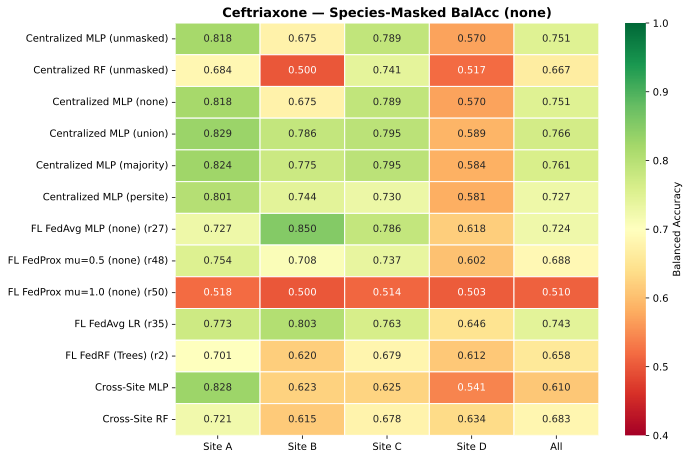
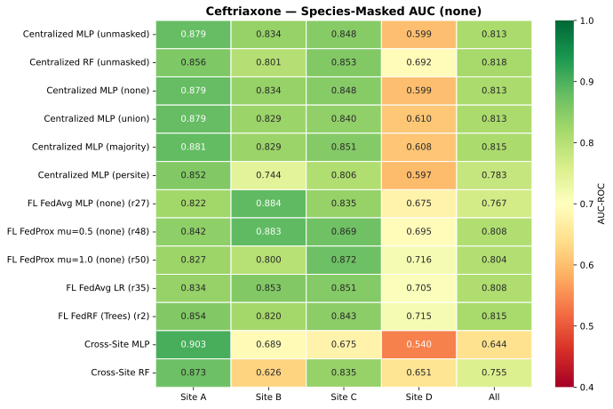

Federated Ceftriaxone × E. coli — Results
Flower (flwr)-based Federated learning across 4 DRIAMS sites (A/B/C/D): 50 rounds, 5 strategies (FedAvg MLP, FedProx μ=0.5 and 1.0, FedLR and FedRF).
These results were produced by the 2026-10-15 run of 06-03c-Species-Masked-Ceftriaxone-Federated.ipynb — see 06-03c: How It Works for the 4-phase pipeline. The Ceftazidime counterpart lives in 06a.
Note
Provenance. Run of 2026-10-15 (…-z-Runs/01-Run), 50 rounds, with
the canonical squared FedProx penalty
((μ/2)·‖w − w_global‖²) and a worst-site-tuned RF decision threshold.
Best configurations from best_params_used.txt: MLP lr 1.5e-4,
dropout 0.8 (threshold 0.25); LR C 5e-5 (threshold 0.50); RF 200
trees / depth 20 / leaf 10 / balanced (threshold 0.23). Winning
species mask: none. A companion run (06-03d)
repeats the pipeline with site/instrument masking — see
Mask & Deconfounding Diagnostics — Why Masking Fails.
Final Results
Method |
BalAcc |
AUC |
Peak |
|---|---|---|---|
Centralized MLP (unmasked) |
0.751 |
0.813 |
- |
Centralized MLP (union) |
0.766 |
0.813 |
- |
Centralized MLP (majority) |
0.761 |
0.815 |
- |
Centralized MLP (persite) |
0.727 |
0.783 |
- |
Centralized RF (unmasked) |
0.667 |
0.818 |
- |
FL FedAvg LR |
0.743 |
0.808 |
r35 |
FL FedAvg MLP (none) |
0.724 |
0.767 |
r27 |
FL FedProx μ=0.5 (none) |
0.688 |
0.808 |
r48 |
FL FedProx μ=1.0 (none) |
0.510 |
0.804 |
r50 |
FL FedRF (Trees) |
0.658 |
0.815 |
r2 |
Cross-Site MLP |
0.610 |
0.644 |
- |
Cross-Site RF |
0.683 |
0.755 |
- |
Values are the pooled four-site (“All”) test metrics; “Peak” is the round where a federated strategy reached its best pooled Balanced Accuracy (round 1 is the initial, untrained evaluation). The federated MLP strategies share the validation-tuned MLP threshold (0.25); the LR and RF strategies use their own tuned thresholds (0.50 and 0.23).


Left: pooled Balanced Accuracy of the FedAvg MLP across the species-mask
comparison (phase 3) — none, union, majority and persite.
Middle: all methods under the winning none mask, with the unmasked
centralized MLP as the dotted reference. Right: pooled validation
cross-entropy for the same strategies.
Key Findings
Federated LR Leads
FedAvg LR is the strongest federated strategy on this drug–pathogen pair:
it climbs from the chance-level initial evaluation to 0.743 BalAcc by round
35 and still holds 0.737 at round 50 — it never collapses, unlike the MLP
strategies. It edges out the FedAvg MLP (0.724, peak round 27, then drifts to
0.668 by round 50) and lands within ~1 point of the unmasked centralized MLP
(0.751) and ~2.3 points of the best masked centralized variant (union,
0.766). That ordering is the opposite of the dedicated per-drug study (07),
where pooling favours the non-linear models.
Proximal Regularisation Hurts at μ ≥ 0.5
With the corrected squared FedProx penalty, both proximal strengths land below plain FedAvg: μ=0.5 reaches 0.688 (peak round 48) and μ=1.0 stalls at 0.510 — essentially chance. AUC-ROC stays high in both cases (0.808 / 0.804), so ranking quality survives; what collapses is the thresholded decision. High μ keeps the clients close to the global weights, compressing the probability scale against the shared validation-tuned threshold (0.25). The training-loss trace shows the same effect — by round 50 the pooled client cross-entropy is 0.043 for FedAvg, 0.176 for μ=0.5 and 0.464 for μ=1.0.
This is a protocol-sensitive finding: an earlier implementation (unsquared proximal distance, 30 rounds, μ=0.1) suggested a marginal FedProx benefit. With the canonical penalty and these μ values the trade-off is not favourable — proximal regularisation slows local fitting more than it buys in global stability.
Species Masking in Centralized Baselines
Each site trains a species-Random Forest and flags its top-500 species-predictive m/z bins; the four strategies differ in how those flags are combined. The flagged bins are zeroed, not used to filter species (see Species masking for the full definitions):
noneNo masking — the full 6000-bin spectrum (the reference).
unionBins flagged by at least one site.
majorityBins flagged by at least two sites.
persiteEach site zeroes its own flagged bins, simulating local species distributions.
On the centralized MLP, union is the strongest (0.766), ahead of
majority (0.761) and the unmasked baseline (0.751); persite is the
weakest (0.727). The federated pipeline nevertheless selected none: its
criterion is the worst-site FedAvg improvement over unmasked, and no mask
improved the worst site.


Effect of the three species masks on the centralized MLP, per site
(masked minus unmasked Balanced Accuracy). Masking helps Site B (for
union and majority) while the other sites are neutral or
slightly worse — which is why the worst-site criterion kept none.
06-03c: How It Works
The results on this page come from 06-03c-Species-Masked-Ceftriaxone-Federated.ipynb, a 4-phase notebook that works on all species (not just E. coli):
Per-site species RF classifiers — identifies the top 500 m/z bins most predictive of species on each site
Mask computation — three strategies (union/majority/persite) plus an unmasked baseline; each mask zeroes species-specific bins
Mask comparison — FedAvg MLP trained on all four masked variants; winning mask = highest worst-site improvement over unmasked
Full FL pipeline — winning mask applied, then FedAvg MLP, FedProx μ=0.5 and 1.0, FedLR, FedRF, and the cross-site baselines
Output: mask_delta.pdf (per-site improvement per mask vs. unmasked),
the results table above, per-round CSV files (validation metrics and training
loss) and the saved species RF classifiers for reuse in 08.
The winning mask for this run was ``none`` (no masking), meaning
species-filtering did not improve worst-site performance on this
drug–pathogen pair. The follow-up diagnostic (Mask & Deconfounding Diagnostics — Why Masking Fails) shows
this is not a weak-mask artifact — species information is redundant across the
spectrum, so zeroing the top-500 species bins removes almost no species
signal regardless of the RF’s max_features. The companion site-masking run
(06-03d)
reaches the same conclusion for the instrument signal.
Training Loss Monitoring
The 06-03c notebook captures per-site training loss (cross-entropy)
at every round alongside the validation metrics. This enables:
Overfitting diagnosis — comparing train vs. validation loss curves to detect when a model starts memorising local data
Site-specific training dynamics — identifying which hospitals learn fastest/slowest, revealing data quality or size differences
Proximal regularisation effect — quantifying how FedProx μ influences local optimisation vs. standard FedAvg (here: higher μ clearly slows the local fit — see the μ results above)
Training loss is extracted directly from each client’s fit() return value
(which already computes per-epoch cross-entropy). For FedProx, this is
captured via the custom CheckpointFedProx.aggregate_fit override, which
records per-site and aggregated losses before model aggregation. For
FedAvg, a fit_metrics_aggregation_fn is registered on the strategy
to collect the mean training loss across clients.
Threshold Tuning Resolves the FedRF Stuck-at-0.5 Issue
FedRF (tree collection over 5 rounds, 1200 → 6000 trees) reaches 0.658 BalAcc / 0.815 AUC with the worst-site tuned threshold (0.23). An untuned 0.5 threshold had previously left its Balanced Accuracy pinned at 0.500 while AUC looked healthy — a pure calibration artifact on the imbalanced test set. Tuning the same way also lifts the cross-site RF baseline to 0.683 / 0.755, close to its federated counterpart.
Cross-Site as Lower Bound
Training on DRIAMS-A alone and testing on B/C/D yields 0.610 BalAcc (MLP) and 0.683 (RF). This is the cost of not sharing data at all: federated learning recovers 13 points on the MLP side (0.743 vs. 0.610) without centralising raw spectra. The RF baseline is the exception — with a tuned threshold its cross-site score is close to the federated tree collection.
Per-Site Heatmaps


Pooled Balanced Accuracy per method (rows) and site (columns); the All column is the pooled four-site value.


Same layout for AUC-ROC.
Notebooks
06-03a-Ceftriaxone-E-coli-Federated.ipynb — Basic FL (E. coli only): FedAvg + FedProx + FedLR + FedRF
06-03b-Ceftriaxone-E-coli-Federated.ipynb — FL variant B
06-03c-Species-Masked-Ceftriaxone-Federated.ipynb — Ran to produce these results (2026-10-15): 4-phase pipeline with per-site species RF, data-driven mask selection, and the full FL pipeline. Produces the centralized MLP (none/union/majority/persite) baselines and
mask_delta.pdf.06-03d-Site-Masked-Ceftriaxone-Federated.ipynb — site/instrument masking companion (2026-10-15); see Mask & Deconfounding Diagnostics — Why Masking Fails
06-03b-Re-Run-lr-Ceftriaxone-E-coli-Fed.ipynb — FedLR re-run
retry_fedprox.ipynb — FedProx μ retry utility